화학분석기사 (2022-03-05 기출문제)
1과목: 화학분석 과정관리
1. 다음 표의 (ㄱ), (ㄴ), (ㄷ) 에 들어갈 숫자를 순서대로 나열한 것은?
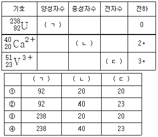
- ①
- ②
- ③
- ④
(정답률: 79%)

2. 시료 채취 장비와 시료 용기의 준비과정이 잘못된 것은?
- 스테인리스 혹은 금속으로 된 장비는 산으로 헹군다.
- 장비 세척 후 저장이나 이송을 위해서는 알루미늄 포일로 싼다.
- 금속류 분석을 위한 시료 채취 용기로는 뚜껑이 있는 플라스틱 병을 사용한다.
- VOCs, THMs의 분석을 위한 시료 채취 용기 세척 시 플라스틱 통에 든 세제를 사용하면 안 된다.
(정답률: 78%)
3. 어떤 학생의 NaOH 용액 제조과정 실험 레포트 중 잘못된 것을 모두 고른 것은?
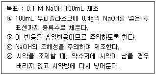
- ⓐ
- ⓐ, ⓑ
- ⓑ, ⓓ
- ⓐ, ⓑ, ⓓ
(정답률: 45%)
4. C4H8의 모든 이성질체 개수는?
- 4
- 5
- 6
- 7
(정답률: 53%)
5. 다음 중 수소의 질량 백분율(%)이 가장 큰 것은?
- HCl
- H2O
- H2SO4
- H2S
(정답률: 80%)
6. 전자기 복사선 중 핵에 관계된 양자 전이 형태를 이용하는 분광법은?
- X-선 회절
- 감마선 방출
- 자외선 방출
- 적외선 흡수
(정답률: 48%)
7. 1.6m의 초점거리와 지름이 2.0cm인 평행한 거울로 되어 있고, 분산장치는 1300홈/mm의 회절발을 사용하고 있는 단색화 장치의 2차 역선형 분산(D-1; nm/mm)은?
- 0.12
- 0.24
- 0.36
- 0.48
(정답률: 50%)
8. 유기 화합물의 작용기 구조를 나타낸 것 중 틀린 것은?
- 알코올 : R-OH
- 아민 : R-NH2
- 알데하이드 : R-CHO
- 카르복실산 : R-CO-R′
(정답률: 73%)
9. 시료의 종류 및 분석 내용에 따라 시험 방법을 선택하려고 한다. 시험 방법 선택을 위해 파악 할 사항에 해당하지 않는 것은?
- 시험 결과 통지를 확인한다.
- 이용 가능한 도구/기기를 파악한다.
- 필요한 시료를 준비하고 농도와 범위를 확인한다.
- 이용할 수 있는 표준 방법이 있는지 확인한다.
(정답률: 84%)
10. 아세틸화칼슘(CaC2) 100g에 충분한 양의 물을 가하여 녹였더니 수산화칼슘과 에틸렌 28.3g이 생성되었다. 이 반응의 에틸렌 수득률(%)은?(단, Ca의 원자량은 40amu이다.)(문제 오류로 가답안 발표시 4번으로 발표되었지만 확정답안 발표시 모두 정답처리 되었습니다. 여기서는 가답안인 4번을 누르면 정답 처리 됩니다.)
- 28.3%
- 44.1%
- 64.1%
- 69.7%
(정답률: 77%)
11. Li, Ba, C, F의 원자반지름(pm)이 72, 77, 152, 222 중 각각 어느 한 가지씩의 값에 대응한다고 할 때 그 값이 옳게 연결된 것은?
- Ba - 72pm
- Li - 152pm
- F - 77pm
- C - 222pm
(정답률: 75%)
12. 채취한 시료의 표준 시료 제조에 대한 설명으로 틀린 것은?
- 고체 시료의 경우 입자 크기를 줄이기 위하여 시료 덩어리를 분쇄하고, 균일성을 확보하기 위하여 분쇄된 입자를 혼합한다.
- 고체 시료의 경우 분석 작업 직전에 시료를 건조하여 수분의 함량이 일정한 상태로 만드는 것이 바람직한다.
- 액체 시료의 경우 용기를 개봉하여 용매를 최대한 증발시키는 것이 바람직하다.
- 분석물이 액체에 녹아 있는 기체인 경우 시료 용기는 대부분의 경우 분석의 모든 과정에서 대기에 의한 오염을 방지하기 위하여 제2의 밀폐 용기 내에 보관되어야 한다.
(정답률: 81%)
13. 화학식과 그 명칭을 잘못 연결한 것은?
- C3H8 - 프로판
- C4H10 - 펜탄
- C6H14 - 헥산
- C8H18 - 옥탄
(정답률: 84%)
14. 시판되는 염산 수용액의 정보가 아래과 같을 때, 염산 수용액의 농도(M)는? (단, HCl의 분자량은 36.5g/mol이다.)
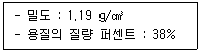
- 12.39
- 0.01239
- 32.60
- 0.03260
(정답률: 57%)
15. 다음 중 물에 용해가 가장 잘 되지 않을 것으로 예측되는 알코올은?
- 메탄올
- 에탄올
- 부탄올
- 프로판올
(정답률: 50%)
16. 다음 원자 중 금속성이 가장 큰 것은?
- Mg
- Pb
- Sn
- Ba
(정답률: 37%)
17. 물은 비슷한 분자량을 갖는 메탄 분자에 비해 끓는점이 훨씬 높다. 다음 중 이러한 물의 특성과 가장 관련이 깊은 것은?
- 수소결합
- 배위결합
- 공유결합
- 이온결합
(정답률: 80%)
18. 원자가전자에 대한 설명 중 옳은 것은?
- 원자가전자는 최외각에 있는 전자이다.
- 원자가전자는 원자들 사이에서 물리결합을 형성한다.
- 원자가전자는 그 원소의 물리적 성질을 지배한다.
- 원자가전자는 핵으로부터 가장 멀리 떨어져 있어서 에너지가 가장 낮다.
(정답률: 73%)
19. 부탄(C4H10) 1몰을 완전 연소시킬 때 발생하는 이산화탄소와 물의 질량비에 가장 가까운 것은?
- 2.77 : 1
- 1 : 2.77
- 1.96 : 1
- 1 : 1.96
(정답률: 68%)
20. 푸리에 변환 기기를 사용하면 신호 대 잡음비의 향상이 매우 큰 분광영역은?
- 자외선
- 가시광선
- 라디오파
- 근적외선
(정답률: 55%)
2과목: 화학물질 특성분석
21. 0.1M 질산 수용액의 pH는?
- 0.1
- 1
- 2
- 3
(정답률: 68%)
22. 용해도에 대한 설명으로 틀린 것은?
- 용해도란 특정온도에서 주어진 양의 용매에 녹을 수 있는 용질의 최대양이다.
- 일반적으로 고체물질의 용해도는 온도 증가에 따라 상승한다.
- 일반적으로 물에 대한 기체의 용해도는 온도 증가에 따라 감소한다.
- 외부압력은 고체의 용해도에 큰 영향을 미친다.
(정답률: 66%)
23. 약산을 강염기로 적정하는 실험에 대한 설명으로 틀린 것은?
- 약산의 농도가 클수록 당량점 근처에서 pH 변화폭이 크다.
- 당량점에서 pH는 7보다 크다.
- 약산의 해리상수가 클수록 당량점 근처에서 pH 변화 폭이 크다.
- 약산의 해리상수가 작을수록 적정 반응의 완결도가 높다.
(정답률: 53%)
24. 요오드산바륨(Ba(IO3)2)이 녹아 있는 25℃의 수용액에서 바륨 이온(Ba2+)의 농도가 7.32×10-4M일 때, 요오드산 바륨의 용해도곱 상수는?
- 3.92 × 10-10
- 7.84 × 10-10
- 1.57 × 10-9
- 5.36 × 10-7
(정답률: 54%)
25. 원자흡수분광법에서 분석결과에 영향을 주는 인자와 관계없는 것은?
- 고주파 출력값
- 분광기의 슬릿폭
- 불꽃을 투과하는 광속의 위치
- 가연성가스와 조연성가스 종류 및 이들 가스의 유량과 압력
(정답률: 33%)
26. 어떤 온도에서 다음 반응의 평형상수(Kc)는 50이다. 같은 온도에서 x몰의 H2(g)와 2.5몰의 I2(g)를 반응시켜 평형에 이르렀을 때 4몰의 HI(g)가 되었고, 0.5몰의 I2(g)가 남아 있었다면, x의 값은? (단, 반응이 일어나는 동안 온도와 부피는 일정하게 유지되었다.)
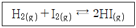
- 1.64
- 2.64
- 3.64
- 4.64
(정답률: 66%)
27. pH 10.00인 100mL 완충용액을 만들려면 NaHCO3(FW 84.01) 4.00g과 몇 g의 Na2CO3(FW 1⑤.99)를 섞어야 하는가? (단, FW는 Formular Weight을 의미한다.)
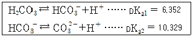
- 1.32
- 2.09
- 2.36
- 2.96
(정답률: 46%)
28. X선 분광법에 대한 설명으로 틀린 것은?
- 방사성 광원은 X선 분광법의 광원으로 사용될 수 있다.
- X선 광원은 연속 스펙트럼과 선 스펙트럼을 발생시킨다.
- X선의 선 스펙트럼은 내부 껍질 원자 궤도함수와 관련된 전자 전이로부터 얻어진다.
- X선의 선 스펙트럼은 최외각 원자 궤도함수와 관련된 전자 전이로부터 얻어진다.
(정답률: 58%)
29. 액성과 관련된 다음 식들 중 틀린 것은?
- Kw = [H3O+][OH-]
- pH + pOH = pKw
- pH = -log[H3O+]
- Ka = Kw × Kb
(정답률: 81%)
30. 원자흡수분광법의 광원으로 가장 적합한 것은?
- 수은등(Mercury Lamp)
- 전극등(Electron Lamp)
- 방전등(Discharge Lamp)
- 속빈 음극등(Hollow Cathode Lamp)
(정답률: 71%)
31. 이온 선택 전극에 대한 설명으로 옳은 것은?
- 이온 선택 전극은 착물을 형성하거나 형성하지 않은 모든 상태의 이온을 측정하기 때문에 pH값에 관계없이 일정한 측정결과를 보인다.
- 금속 이온에 대한 정량적인 분석 방법 중 이온 선택 전극 측정 결과와 유도 결합플라스마 결합 결과는 항상 일치한다.
- 이온 선택 전극의 선택 계수가 높을수록 다른 이온에 의한 방해가 크다.
- 액체 이온선택 전극은 일반적으로 친수성 막으로 구성되어 있으며 친수성 막 안에 소수성 이온 운반체가 포함되어 있다.
(정답률: 38%)
32. La3+이온을 포함하는 미지시료 25.00mL를 옥살산사트륨으로 처리하여 La2(C2O4)3의 침전을 얻었다. 침전 전부를 산에 녹여 0.004321M 농도의 과망간산칼륨 용액 12.34mL로 적정하였다. 미지시료에 포함된 La3+의 농도(mM)는?
- 0.3555
- 1.255
- 3.555
- 12.55
(정답률: 28%)
33. 1.0M 황산용액에 녹아있는 0.⑤M Fe2+ 50.0mL를 0.1M Ce4+로 적정할 때 당량점까지 소비되는 Ce4+의 양(mL)과 당량점에서의 전위(V)는?
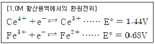
- 25.0, 2.12
- 25.0, 1.06
- 50.0, 2.12
- 50.0, 1.06
(정답률: 44%)
34. KMnO4은 산화-환원 적정에서 흔히 쓰이는 강산화제이다. KMnO4을 사용하는 산화-환원 적정에 관한 다음 설명 중 옳은 것을 모두 고른 것은?
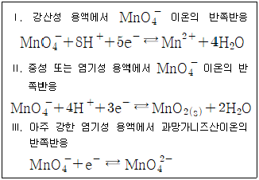
- Ⅲ
- Ⅰ, Ⅱ
- Ⅰ, Ⅲ
- Ⅰ, Ⅱ, Ⅲ
(정답률: 47%)
35. 암모니아 합성 반응에서 정반응 진행을 증가시켜 암모니아 수율을 높이기 위한 조작이 아닌 것은?
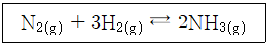
- 반응계에 He(g)를 첨가한다.
- 반응계의 부피를 감소시킨다.
- 반응계에 질소가스를 추가한다.
- 반응계에서 생성된 암모니아가스를 제거한다.
(정답률: 57%)
36. 옥살산은 뜨거운 산성용액에서 과망간산 이온과 아래와 같이 반응한다. 이 반응에서 지시약 역할을 하는 것은?
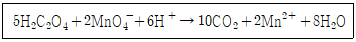
- H2C2O4
- MnO4-
- CO2
- H2O
(정답률: 77%)
37. 중크롬산 적정에 대한 설명으로 틀린 것은?
- 중크롬산 이온이 분석에 응용될 때 초록색의 크롬(Ⅲ)이온으로 환원된다.
- 중크롬산 적정은 일반적으로 염기성 용액에서 이루어진다.
- 중크롬산칼륨 용액은 안정하다.
- 시약급 중크롬산칼륨은 순수하여 표준용액을 만들 수 있다.
(정답률: 44%)
38. 15℃에서 물의 이온화상수가 0.45 ×10-14일 때, 15℃ 물의 H3O+ 농도(M)는?
- 1.0 × 10-7
- 1.5 × 10-7
- 6.7 × 10-8
- 4.2 × 10-15
(정답률: 66%)
39. 원자흡수분광법에 대한 설명으로 틀린 것은?
- 원자 흡수 분광법은 금속 또는 준금속원소를 정량할 수 있다.
- 전열 원자 흡수 분광법은 소량의 시료에 대해 매우 높은 감도를 나타낸다.
- 전열 원자 흡수 분광법은 불꽃 원자 흡수 분광법보다 5~10배 정도 더 큰 오차를 갖는다.
- 전열 원자 흡수 분광법은 전기로를 사용하므로 불꽃 원자 흡수 분광법에 비해 원소당 측정시간이 빠르다.
(정답률: 25%)
40. 다음의 반응에서 산화되는 물질은?
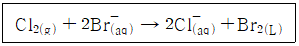
- Br-
- Cl2
- Br2
- Cl2, Br2
(정답률: 75%)
3과목: 화학물질 구조분석
41. Cd | Cd2+ || Cu2+ | Cu 전지에서 Cd2+의 농도는 0.0100M, Cu2+의 농도가 0.0100M이고 Cu 전극 전위는 0.278V, Cd 전극의 전극 전위는 –0.462V 이다. 이 전지의 저항이 3.00Ω이라 할 때, 0.100A를 생성하기 위한 전위(V)는?
- 0.440
- 0.550
- 0.660
- 0.770
(정답률: 33%)
42. 비활성 기체 분위기에서의 CaC2O4·H2O를 실온부터 980℃까지 분당 60℃ 속도로 가열한 열분해곡선(Thermogram)이 다음과 같을 때, 다음 설명 중 옳은 것은?
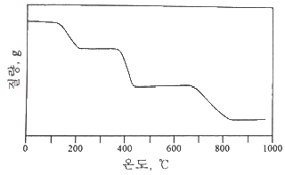
- CaCO3의 직선 범위는 220℃부터 350℃이고 CaO는 420℃부터 660℃이기 때문에 CaO가 열적 안정성이 높다.
- 840℃의 반응은 흡열 반응으로 분자 내부에 결합되어 있던 H2O를 방출시키는 반응이다.
- 360℃에서의 반응은 CaC2O4 →CaCO3 + CO로 나타낼 수 있다.
- 약 13분 정도를 가열하면 무수 옥살산칼슘을 얻을 수 있다.
(정답률: 53%)
43. 일반적인 질량 분석기의 이온화 장치와 다르게 상압에서 작동하는 이온화원은?
- 화학 이온화(CI)
- 탈착 이온화(DI)
- 전기 분무 이온화(ESI)
- 이차 이온 질량 분석(SIMS)
(정답률: 33%)
44. 분리 분석법 중 고체 표면에 기체 물질이 흡착되는 현상에 근거를 두고 있으며, 통상 기체-액체 칼럼에는 머물지 않는 화학종을 분리하는데 유용한 방법은?
- TLC
- LSC
- GLC
- GSC
(정답률: 63%)
45. 적외선 분광법(IR Spectroscopy)에서 카르보닐(C=O)기의 신축진동에 영향을 주는 인자가 아닌 것은?
- 고리 크기 효과(ring size effect)
- 콘주게이션 효과(conjugation effect)
- 수소 결합 효과(hydrogen bond effect)
- 자기 이방성 효과(magnetic anisotropic effect)
(정답률: 32%)
46. 원자나 분자의 흡수 스펙트럼을 써서 정량 분석을 하고자 스펙트럼을 얻어서 그림으로 나타낼 때 일반적으로 가로축에는 파장을 나타내지만, 세로축으로서 거의 쓰이지 않는 것은?
- 투과한 빛살의 세기
- 투광도의 -log값
- 흡광도
- 투광도
(정답률: 64%)
47. 역상 크로마토그래피에서 메탄올을 이동상으로 하여 3가지 물질을 분리하고자 한다. 각 물질의 극성이 아래의 표와 같을 때, 머무름 지수가 가장 클 것으로 예측되는 물질은?
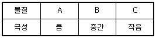
- A
- B
- C
- 극성과 무관하여 예측할 수 없다.
(정답률: 58%)
48. 적외선 분광기를 사용하여 유기화합물을 분석하여 1600~1700cm-1 근처에서 강한 피크와 3000cm-1 근처에서 넓고 강한 피크를 나타내는 스펙트럼을 얻었을 때, 분석시료로서 가능성이 가장 높은 화합물은?
- CH3OH
- C6H5CH3
- CH3COOH
- CH3COCH3
(정답률: 55%)
49. 칼로멜 전극에 대한 설명으로 틀린 것은?
- 포화 칼로멜 전극의 전위는 온도에 따라 변한다.
- 반쪽 전지의 전위는 염화 포타슘의 농도에 따라 변한다.
- 염화 수은으로 포화되어 있고 염화 포타슘 용액에 수은을 넣어 만든다.
- 염화 포타슘과 칼로멜의 용해도가 평형에 도달하는데 짧은 시간이 걸린다.
(정답률: 35%)
50. 고체 시료 분석 시 시료를 전처리 없이 직접 원자화 장치에 도입하는 방법이 아닌 것은?
- 전열 증기화법
- 수소화물 생성법
- 레이저 증발법
- 글로우 방전법
(정답률: 44%)
51. 무정형 벤조산(benzoic acid) 가루 시료의 시차열분석곡선(Differential Thermogram)이 아래와 같을 때, 다음 설명 중 옳은 것은? (단, A는 대기압, B는 200psi 조건에서 측정한 결과이다.)
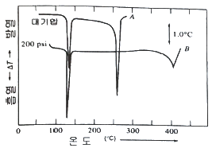
- 대기압에서 벤조산의 용융점은 140℃이다.
- 대기압에서 벤조산은 255℃에서 분해된다.
- 벤조산은 압력이 높을수록 분해되는 온도가 높아진다.
- 압력과 관계없이 시료가 분석 Cell에 흡착했음을 알 수 있다.
(정답률: 41%)
52. 전압-전류법의 이용 분야와 가장 거리가 먼 것은?
- 금속의 표면 모양 연구
- 산화-환원과정의 기초적 연구
- 수용액 중 무기이온 및 유기물질 정량
- 화학변성 전극 표면에서의 전자이동 메커니즘 연구
(정답률: 35%)
53. van Deemter 식에서 정지상과 이동상 사이에 용질의 평형 시간과 관련된 항을 모두 고른 것은? (단, van Deemter 식은 H = A+B/u+Cu 이며 H는 단 높이, u는 흐름속도, A, B, C는 칼럼, 정지상, 이동상 및 온도에 의해 결정되는 상수이다.)
- A
- Cu
- B/u, Cu
- A, B/u
(정답률: 39%)
54. 적외선 광원으로부터 4.54μm 파장의 광선만을 얻기 위한 간섭 필터(Interference Filter)를 제조하려 한다. 이 필터의 굴절률(n)이 1.34라 할 때, 유전층(Dielectric Layer)의 두께(μm)는?
- 1.69
- 3.39
- 6.08
- 12.16
(정답률: 9%)
55. 시차 주사 열량법(Differential Scanning Calorimetry; DSC)에 대한 설명 중 틀린 것은?
- 기기의 보정은 용융열을 이용하여 실시한다.
- 탈수(Dehydration)반응은 흡열 피크를 갖는다.
- 온도를 변화시킬 때 시료와 기준 물질 간의 흘러들어간 열량의 차이를 측정한다.
- 발열 피크는 기준선에서 아래로 오목한 형태로 나타난다.
(정답률: 49%)
56. 질량 분석계의 검출기로 주로 사용되지 않는 것은?
- 전자 증배관 검출기
- 페러데이컵 검출기
- 열전도도 검출기
- 배열 검출기
(정답률: 28%)
57. 시차 주사 열량법(Differential Scanning Calorimetry; DSC)를 3가지로 구분할 때, 나머지 2개의 장치와 구조적으로 다르며, 시료와 기준 물질의 온도가 서로 동일하게 유지되며 새로운 온도 설정에 대한 빠른 평형이 필요한 동역학 연구에 적합한 장비는?
- 전력 보상 DSC
- 열 흐름 DSC
- 변조 DSC
- 압력 DSC
(정답률: 38%)
58. 오른쪽 Cell에는 활동도가 0.5M인 ZnCl2(aq)가, 왼쪽 Cell에는 활동도가 0.01M인 Cd(NO3)2(aq)가 있는 전지에 대한 다음 설명 중 옳은 것은?
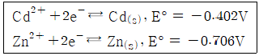
- 전체 전지 전위는 –0.25V 이다.
- 산화 전극의 전위는 0.71V 이다.
- 환원 전극의 전위는 –0.46V 이다.
- 자발적으로 반응이 일어나지 않는다.
(정답률: 31%)
59. 0.2cm 셀에 들어 있는 1.03 ×10-4M Perylene 용액의 440nm에서의 퍼센트 투광도는? (단, Perylene의 몰흡광계수는 440nm에서 34000M-1cm-1이다)
- 15%
- 20%
- 25%
- 30%
(정답률: 57%)
60. Polarogram으로부터 얻을 수 있는 정보에 대한 설명으로 틀린 것은?
- 확산 전류는 분석 물질의 농도와 비례한다.
- 반파 전위는 금속의 리간드의 영향을 받지 않는다.
- 확산 전류는 한계 전류와 잔류 전류의 차이를 말한다.
- 반파 전위는 금속 이온과 착화제의 종류에 따라 다르다.
(정답률: 58%)
4과목: 시험법 밸리데이션
61. 측정값-유효숫자 개수를 짝지은 것 중 틀린 것은?
- 12.9840g - 유효숫자 6개
- 1830.3m - 유효숫자 5개
- 0.0012g - 유효숫자 4개
- 1.0⑤L - 유효숫자 4개
(정답률: 69%)
62. 밸리데이션 통계적 처리를 위해 평균, 표준편차, 상대표준편차, 퍼센트 상대표준편차, 변동계수 등의 계산이 요구된다. 이때 통계처리를 위한 반복 측정횟수로 옳지 않은 것은?
- 3가지 종류의 농도에 대해서 각각 2회 측정
- 시험방법 전체 조작을 10회 반복 측정
- 시험농도의 100%에 해당하는 농도로 각각 6회 반복 측정
- 시험농도의 100%에 해당하는 농도로 각각 10회 반복 측정
(정답률: 43%)
63. 밸리데이션 결과 보고서에 포함될 사항이 아닌 것은?
- 요약 정보
- 시험 장비 목록
- 분석법 작업 절차에 관한 기술
- 밸리데이션 항목 및 판단 기준
(정답률: 30%)
64. 분석시험법의 밸리데이션 항목이 아닌 것은?
- 특이성
- 안전성
- 완건성
- 직선성
(정답률: 57%)
65. 정확도에 대한 설명 중 틀린 것은?
- 참값에 가까운 정도이다.
- 측정값과 인정된 값과의 일치되는 정도이다.
- 반복시료를 반복적으로 측정하면 쉽게 얻어진다.
- 절대오차 또는 상대오차로 표현된다.
(정답률: 63%)
66. 주기적인 교정의 일반적인 목적이 아닌 것은?
- 기준값과 측정기를 사용해서 얻어진 값 사이의 편차의 추정값을 향상시킨다.
- 측정기를 사용해서 달성할 수 있는 불확도를 재확인하는 것이다.
- 경과기간 중에 얻어지는 결과에 대해 의심되는 측정기의 변화가 있는가를 확인하는 것이다.
- 측정의 불확도를 증가시켜 측정의 질이나 서비스에서의 위험을 낮추기 위한 것이다.
(정답률: 66%)
67. 정량 분석법 중 간접 측정 실험에 대한 설명으로 옳지 않은 것은?
- 무게법 : 분석물과 혹은 분석물과 관련 있는 화합물의 질량을 측정한다.
- 부피법 : 분석물과 정량적으로 반응하는 반응물 용액의 부피를 측정한다.
- 전기분석법 : 전위, 전류, 저항, 전하량, 질량 대 전하의 비(m/z)를 측정한다.
- 분광법 : 분석물과 빛 사이의 상호 작용 또는 분석물이 방출하는 빛의 세기를 측정한다.
(정답률: 46%)
68. 분석장비를 이용한 측정방법에 대한 설명 중 옳은 것을 모두 고른 것은?
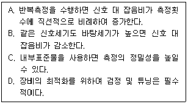
- A, B, D
- A, C, D
- B, C, D
- A, B, C
(정답률: 33%)
69. blank에 관한 설명 중 옳은 것을 모두 고른 것은?
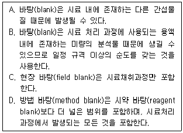
- A, B, C, D
- A, B, C
- A, B, D
- B, C, D
(정답률: 62%)
70. 측정값의 이상점(Outlier)을 버려야 할지 취해야 할지를 결정하기 위해 Grubbs 시험을 진행할 때, 이상점과 G의 계산값은? (단, 95% 신뢰수준에서 G의 임계값은 2.285이다)
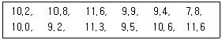
- 7.8, G계산 = 2.33
- 7.8, G계산 = 2.12
- 11.6, G계산 = 1.30
- 11.6, G계산 = 1.23
(정답률: 35%)
71. 단백질이 포함된 탄수화물 함량을 5회 측정한 결과가 다음과 같을 때, 탄수화물 함량에 대한 90% 신뢰구간은? (단, 자유도 4일 때 t값은 2.132이다.)
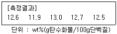
- 12.54 ± 0.28wt%
- 12.54 ± 0.38wt%
- 12.54 ± 0.48wt%
- 12.54 ± 0.58wt%
(정답률: 52%)
72. 검·교정 대상 기구가 아닌 것은?
- 피펫
- 뷰렛
- 부피 플라스크
- 삼각 플라스크
(정답률: 55%)
73. 시료 전처리의 오차를 줄이기 위한 시험방법에 대한 설명으로 틀린 것은?
- 공시험(Blank Test)은 시료를 사용하지 않고 기타 모든 조건을 시료 분석법과 같은 방법으로 실험하는 것이며 계통오차를 효과적으로 줄일 수 있다.
- 회수시험(Recovery Test)은 시료와 같은 공존물질을 함유하는 기지 농도의 대조 시료를 분석함으로써 공존 물질의 방해 작용 등으로 인한 분석값의 회수율을 검토하는 방법이다.
- 맹시험(Blind Test)은 분석값이 어느 범위 내에서 서로 비슷하게 될 때까지 실험을 되풀이하는 것이 보통이며 일종의 예비시험에 해당한다.
- 평행 시험(Parallel Test)은 같은 시료를 각기 다른 방법으로 여러 번 되풀이하는 시험으로써 계통오차를 제거하는 방법이다.
(정답률: 47%)
74. 정량한계와 이를 구하기 위한 방법에 대한 설명으로 옳지 않은 것은?
- 정량한계는 기지량의 분석대상물질을 함유한 검체를 분석하고 그 분석대상물질을 확실하게 검출할 수 있는 최저의 농도를 확인함으로써 결정된다.
- 정량한계는 기지농도의 분석대상물질을 함유하는 검체를 분석하고, 정확성과 정밀성이 확보된 분석대상물질을 정량할 수 있는 최저농도를 설정하는 것이다.
- 기지의 저농도 분석대상물질을 함유하는 검체와 공시험 검체의 신호를 비교하여 설정함으로써 신호 대 잡음비를 구할 수 있으며, 정량한계를 산출하는데 있어, 신호 대 잡음비는 일반적으로 10 :1 이 적당하다.
- 정량한계는 10×σ/S 로 구할 수 있으며, σ는 반응의 표준편차를, S는 검량선의 기울기를 말한다.
(정답률: 46%)
75. 분석물질의 확인시험, 순도시험 및 정량 시험 밸리데이션에서 중요하게 평가 되어야 하는 항목은?
- 범위
- 특이성
- 정확성
- 직선성
(정답률: 49%)
76. 밸리데이션 된 시험방법이 가져야 할 정보가 아래와 같을 때, ( ) 안에 들어갈 용어는?
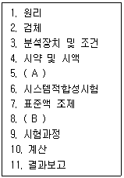
- A : 표준품, B : 검액조제
- A : 사용기간, B : 실행예시
- A : 측정방법, B : 첨가액 조제
- A : 가이드라인, B : 표준액 희석
(정답률: 34%)
77. 시험·검사기관에서 사용하는 용어의 정의로 옳지 않은 것은?
- 장비 : 시험검사를 수행하는 데 이용되는 소프트웨어를 제외한 하드웨어
- 측정불확도 : 측정량에 귀속된 값의 분포를 나타내는 측정결과와 관련된 값으로써 측정결과를 합리적으로 추정한 값의 분산특성
- 인증표준물질 : 국가 또는 공인된 기관이 발행한 문서가 있으며 유효한 절차에 의하여 추정된 불확도와 소급성 정보 등 하나 이상의 특성값을 가지는 표준물질
- 표준균주 : 특정 미생물 항목의 시험, 검사를 수행할 때 검출된 미생물에 대한 생화학적 특성의 비교대상이 되는 균주 또는 생화학적 시험, 검사에 필요한 균주
(정답률: 52%)
78. 특정 업무를 표준화된 방법에 따라 일관되게 실시할 목적으로 해당 절차 및 수행 방법 등을 상세하게 기술한 문서는?
- 표준작업지침서(SOP)
- 관리체계도(Chain-of Custody)
- 프로토콜(Protocol)
- 표준규격(Standard Document)
(정답률: 68%)
79. 제작자의 규격, 교정성적서 혹은 다른 출처로부터 인용되고 인용된 불확도가 표준편차의 특정 배수라는 것이 언급되어 있다면 표준불확도 U(x)는 인용된 값을 그 배수로 나눈 값으로 한다. 명목상 1kg 스테인리스강 표준분동의 성적서에 질량과 불확도가 아래와 같이 명시되어 있을 때, 표준 분동의 표준불확도(μg)는?
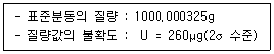
- 0.8
- 1.37
- 130
- 260
(정답률: 41%)
80. A회사의 시험결과 정리법과 B물질의 수분 측정 결과값이 아래와 같을 때, 시험결과 정리법에 맞게 정리된 값은? (단, B물질의 수분 규격(기준)은 0.3% 이하이고 측정은 3회 실시하며 평균값으로 reporting한다.)
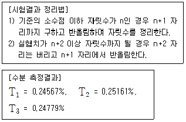
- 0.2
- 0.20
- 0.24
- 0.25
(정답률: 35%)
5과목: 환경·안전관리
81. Ether 화합물은 일반적으로 안정적인 화학물이나 일부는 공기 중 산소와 천천히 반응하여 O-O 결합이 포함된 폭발성이 있는 과산화물을 형성하여 저장에 주의가 필요하다. 이러한 Ether 화합물을 1차 알코올을 이용하여 제조하는 반응은?
- SN1
- SN2
- E1
- E2
(정답률: 43%)
82. 산화수에 관련된 설명 중 틀린 것은?
- 과산화물에서 산소의 산화수는 –2이다.
- 화합물에서 수소의 산화수는 보통 +1이지만, 금속 수소화합물에서 수소의 산화수는 –1이다.
- 이온결합성 화합물에서 각 원자의 산화수는 이온의 하전수와 같다.
- 중성 분자에서 각 산화수에 원자수를 곱한 값의 합은 0이다.
(정답률: 58%)
83. 폴리에틸렌의 첨가중합을 위해 필요한 단량체는?
- H2C = CH2
- H2C = CH-CH3
- H2N(CH2)6NH2
- C6H4(COOH)2
(정답률: 53%)
84. 자연발화의 방지조건으로 가장 적절한 것은?
- 저장실의 온도가 높고, 통풍이 안 되고 습도가 낮은 곳
- 저장실의 온도가 낮고, 통풍이 잘 되고 습도가 높은 곳
- 습도가 높고, 통풍이 안 되고 저장실의 온도가 낮은 곳
- 습도가 낮고, 통풍이 잘 되고 저장실의 온도가 낮은 곳
(정답률: 49%)
85. 폐기물관리법령상의 용어 정의로 틀린 것은?
- 폐기물 : 쓰레기, 연소재, 오니, 폐유, 폐산, 폐알칼리 및 동물의 사체 등으로 사람의 생활이나 사업활동에 필요하지 아니하게 된 물질을 말한다.
- 의료폐기물 : 보건·의료기관, 동물병원, 시험·검사기관 등에서 배출되는 폐기물 중 인체에 감염 등 위해를 줄 우려가 있는 폐기물과 인체조직 등 적출물, 실험동물의 사체 등 보건·환경 보호 상 특별한 관리가 필요하다고 인정되는 폐기물을 말한다.
- 처분 : 폐기물의 매립·해역배출 등의 중간처분과 소각·중화·파쇄·고형화 등의 최종처분을 말한다.
- 지정폐기물 : 사업장폐기물 중 폐유·폐산 등 주변 환경을 오염시킬 수 있거나 의료폐기물 등 인체에 위해를 줄 수 있는 해로운 물질을 말한다.
(정답률: 52%)
86. 화학물질의 분류·표시 및 물질안전보건자료에 관한 기준상 화학물질의 정의는?
- 원소와 원소간의 화학반응에 의하여 생성된 물질을 말한다.
- 두 가지 이상의 화학물질로 구성된 물질 또는 용액을 말한다.
- 순물질과 혼합물을 말한다.
- 동소체를 말한다.
(정답률: 54%)
87. 위험물안전관리법령상 저장소의 구분에 해당되지 않는 것은?
- 일반저장소
- 암반탱크저장소
- 옥내탱크저장소
- 지하탱크저장소
(정답률: 44%)
88. 농약의 유독성·유해성 분류와 분류기준이 잘못 연결된 것은?
- 급성독성 물질 - 입이나 피부를 통해 1회 또는 12시간 내에 수회로 나누어 투여하거나 6시간 동안 흡입 노출되었을 때 유해한 영향을 일으키는 물질
- 눈 자극성 물질 - 눈 앞쪽 표면에 접촉시켰을 때 21일 이내에 완전히 회복 가능한 어떤 변화를 눈에 일으키는 물질
- 발암성 물질 - 암을 일으키거나 암의 발생을 증가시키는 물질
- 생식독성 물질 – 생식 기능, 생식 능력 또는 태아 발육에 유해한 영향을 일으키는 물질
(정답률: 55%)
89. 폐기물관리법령상 위해의료폐기물에 해당하지 않는 것은?
- 조직물류폐기물
- 병리계폐기물
- 손상성폐기물
- 격리의료폐기물
(정답률: 26%)
90. 가연성가스인 C4H10인 LEL과 UEL이 각각 1.8%, 8.4%일 때 C4H10의 위험도( )는? (단, LEL은 Lower Explosive Limit, UEL은 Upper Explosive Limit를 의미한다.)
- 0.79
- 1.21
- 3.67
- 5.67
(정답률: 36%)
91. 소화기에 “A2”, “B3” 등으로 표기된 문자 중 숫자가 의미하는 것은?
- 소화기의 제조번호
- 소화기의 능력단위
- 소화기의 소요단위
- 소화기의 사용순위
(정답률: 70%)
92. 위험물안전관리법에 대한 내용으로 옳지 않은 것은?
- 유해성이 있는 화학물질로서 환경부장관이 정하여 고시한 유독물질을 다루는 법이다.
- 위험물은 인화성 또는 발화성 등의 성질을 가지는 것으로 대통령령으로 정한 물질이다.
- 위험물의 저장·취급 및 운반과 이에 따른 안전관리에 관한 사항을 규정함으로써 위험물로 인한 위해를 방지하여 공공의 안전을 확보함을 목적을 제정한 법이다.
- 위험물에 대한 효율적인 안전 관리를 위하여 유사한 성상끼리 묶어 제1류~제6류로 구별하고 각 종류별로 대표적인 품명과 그에 따른 지정 수량을 정한다.
(정답률: 50%)
93. 위험물안전관리법령상 자연발화성 물질 및 금수성 물질에 해당되지 않는 것은?
- 유기금속화합물
- 알킬알루미늄
- 산화성고체
- 알칼리금속
(정답률: 60%)
94. 소화기의 장·단점으로 옳은 것은?
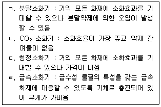
- ㄱ, ㄴ
- ㄴ, ㄷ
- ㄱ, ㄷ
- ㄷ, ㄹ
(정답률: 50%)
95. 미세먼지의 발생원인 이산화황(SO2) 175.8g이 SO3로 전환될 때 발생하는 열(kJ)은?
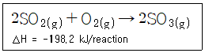
- -272.22
- 272.22
- -135.96
- 135.96
(정답률: 31%)
96. 위험물안전관리법령에 따른 위험물의 분류 중 산화성액체에 해당하지 않는 것은?
- 질산
- 에탄올
- 과염소산
- 과산화수소
(정답률: 63%)
97. 실험실 내의 모든 위험물질은 안전보건표지를 설치·부착하여야 하며, 표지의 색채는 산업안전보건법령상 규정되어 있다. 다음 중 안전보건표지의 분류와 관련 색채의 연결이 옳은 것을 모두 고른 것은?
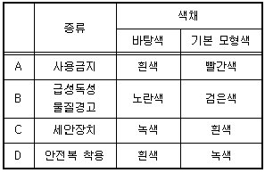
- A, B, D
- A, C, D
- A, C
- A, B
(정답률: 34%)
98. 대기환경보전법령상 대기오염방지시설이 아닌 것은? (단, 기타 시설은 제외한다)
- 중력집진시설
- 흡수에 의한 시설
- 미생물을 이용한 처리시설
- 가스교환을 이용한 처리시설
(정답률: 14%)
99. B급 화재에 해당하는 것은?
- 일반화재
- 전기화재
- 유류화재
- 금속화재
(정답률: 63%)
100. 산업안전보건법령상 물질안전보건자료 작성 시 포함되어 있는 주요 작성항목이 아닌 것은?
- 응급조치요령
- 법적규제 현황
- 폐기 시 주의사항
- 생산책임자 성명
(정답률: 58%)